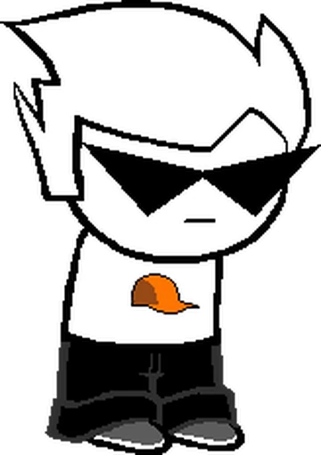

Dirk
Dirk Strider resides in a high rise apartment building in Houston Texas in the middle of the ocean.
Global warming is a bitch. Anyways he resides in the future of Earth B long after the Condesce wins out and
has her way with the Earth.
Dirk has a great deal of admiration for his Bro, Dave Strider who went out fighting the Condesce long before
Dirk was ectobiologically born and thrown onto the planet via meteor as most Sburb players are prone to do.
Dave Strider with the knowledge of his ecto-twin Rose Lalonde's visions of both Dirk and Roxy ariving both prepared
homes for their arival with pleanty of supplies for them to live til they play the game.
Dirk Strider has a major crush on his internet friend Jake English who he eventually does end up temporarily
dating for a while before the relationship falls apart. Like his pre scratch bro, Dirk also showcases some love
of music with his tendancy to rap, though he much more adores puppets with lil Cal being his most tresured puppet (unlike dave's lil cal, this one is empty and not possessed by a malicious entity) and has a great amount of proficiency in
building robots, with the Bro bot he builds for Jake to help him train as an example. A more notible example
is the AI auto-responder he creates using a copy of his brain at age 13 to create a true AI which names himself Hal
in refference to Hal 9000 from 2001 a Space odessesy. Dirk also likes horses. He is often headcannoned by the
fandom to be a brony though I am uncertain if this is cannon fact. To summarize, gay, genius, completely isolated from any in person contact,
horses (undeniably the most important trait).
With some practice, he is uniquely able to control his dream self while awake, which he uses to his advantage
preventing the assassination of his and Roxy's dream selves, gather infomation on Derse, etc.
With Hal's help, he executes an elaborate plan to get all his friends and himself into the medium and to win the
romantic partnership of Jake English in the process, beheading himself and using Hal to get Jake to revive him with a kiss,
then reviving Roxy and Jane and getting them all to Jake's island home so they can all enter the game together.
His interpersonal relationships go downhill from here, ignoring the girls to focus on Jake and being clingy and controling of
Jake, who is a non-confrontational person who would rather manipulate others into solving problems for him. So rather than discuss
their problems and communicating like a healthy couple, Jake just avoids him cause he doesn't want to deal with the problem.
After Jane's discovery of and prompt intoxication by the trickster lollipop and her quick infecting of Jake and Roxy with trickster mode
when they all go to meet Dirk, tired of being ignored by Jake, Dirk ends the relationship, then is promptly infected with trickster mode
by Roxy. Dirk remains the only person to maintain a clear state of mind while in trickster mode but is not spared the hangover
when they all wake up upon their quest beds after trickster mode wears off.
They are all then killed by the Condesce and go god tier.
Post retcon Dirk gets to meet Dave and they have a heart to heart about what their versions of the other did and Dirk apologizes
for the abuse Dave underwent at the hand of his alternate. They bond and hug and fight together for the reward
| Dave Strider |
|---|
|
 |
| Classpect |
| Prince of Heart |
| Strife Specibus |
| BladeKind |
| Chumhandle |
|
Timaeus Testified |
|
Ectobiological family |
| Dave Strider |
| Rose Lalonde |
| Guardian |
| Dave Strider |
|
Pre-Scratch alternate |
| Bro Strider |
| Planet |
|
The Land of Tombs and Krypton |